| FSDA toolbox |
|
The MCD estimator works as follows:
Fix an integer h such that [(n+v+1)/2] ≤h < n where [] denotes the integer part. The preferred choice of h for outlier detection is its lower bound, which yields the breakdown value [(n+v+1)/2]/n. Let 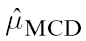 and 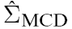 be the mean and the covariance matrix of the subset of h observations for which the determinant of the covariance matrix is minimal. is defined to be the MCD estimator of μ, whereas the MCD estimator of Σ is proportional to .
The proportionality constant is chosen to achieve consistency at the normal model. It was derived by Butler et al. (1993) and by Croux and Haesbroeck (1999) as
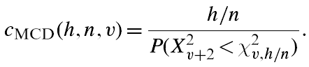
The MCD is used because it has rate of convergence n−0.5, unlike the minimum volume ellipsoid estimator (Davies, 1992) for which convergence is at rate n−1/3. Another reason is the fast algorithm of Rousseeuw and Van Driessen (1999), which has been implemented in many languages.
Although consistent at the normal model, the estimator
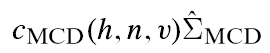is still biased for small sample sizes in the sense that the empirical size is much greater than the nominal one. Pison et al. (2002) showed by Monte Carlo simulation the importance of applying a small sample correction factor to it to achieve an empirical size much closer to the nominal. Let 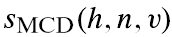 be this factor for a specific choice of n and v. The resulting (squared) robust Mahalanobis distances are then
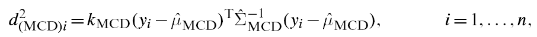
where 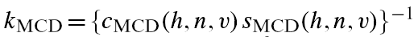. These distances are compared with the α% cutoff value of their asymptotic χ2 distribution with v degrees of freedom, with α in most published reports between 0.01 and 0.05.
The exact finite sample distribution of the robust Mahalanobis distances analyzed above is unknown, but Hardin and Rocke (2005) proposed a scaled F-approximation which, in small and moderate samples, outperforms the asymptotic χ2v distribution approximation of MCD
To increase efficiency, a reweighted version of the MCD estimators is often used in practice. These reweighted estimators, 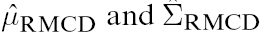 are computed by giving weight 0 to observations for which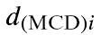 exceeds a cut-off value. Thus a first subset of h observations is used to select a second subset from which the parameters are estimated. The default choice for this cut-off is
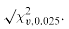
Both the consistency (Croux and Haesbroeck, 2000) and the small sample (Pison et al., 2002) correction factors 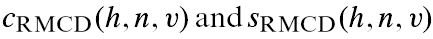 can be applied to 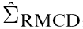 when the squared robust Mahalanobis distances become
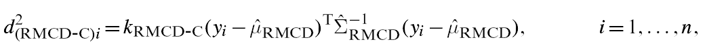
with 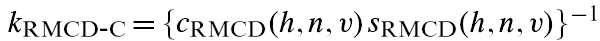 . The reweighted distances are again compared with their asymptotic χ2v -distribution (Lopuhaä, 1999).
The code below loads the heads dataset and launch the MCD outlier detection procedure
% Load the data
load('head');
Y=head.data;
% Use function FSM (Forward search in multivariate analysis with automatic outlier detection purposes)
[RAW,REW]=mcd(Y,'plots',1,'conflev',1-0.01/size(Y,1));
No outlier is declared using the Bonferroni threshold using raw or reweuighted mcd.

The code below loads the mussels dataset and performs an automatic outlier detection procedure in the original scale and then in the BoxCox transformed scale.
Analysis on the original scale
load('mussels.mat');
Y=mussels.data;
[RAW,REW]=mcd(Y,'plots',1,'conflev',1-0.01/size(Y,1));

The associated scatter plot matrices with the outliers highlighted, which are produced atuomatically are shown below.

The analysis on the transformed scale is shown below
load('mussels.mat');
Y=mussels.data;
la=[0.5 0 0.5 0 0];
v=size(Y,2);
Y=normBoxCox(Y,1:v,la);
[RAW,REW]=mcd(Y,'plots',1,'conflev',1-0.01/size(Y,1))

The raw MCD seems to declare 6 outliers while the reweighted MCD finds just 4.
You can compare this output with that which comes out from the use of S and MM estimators or those based on the forward search.|
|
Multivariate analysis | Robust Bivariate Analysis using Robust Contours |
|